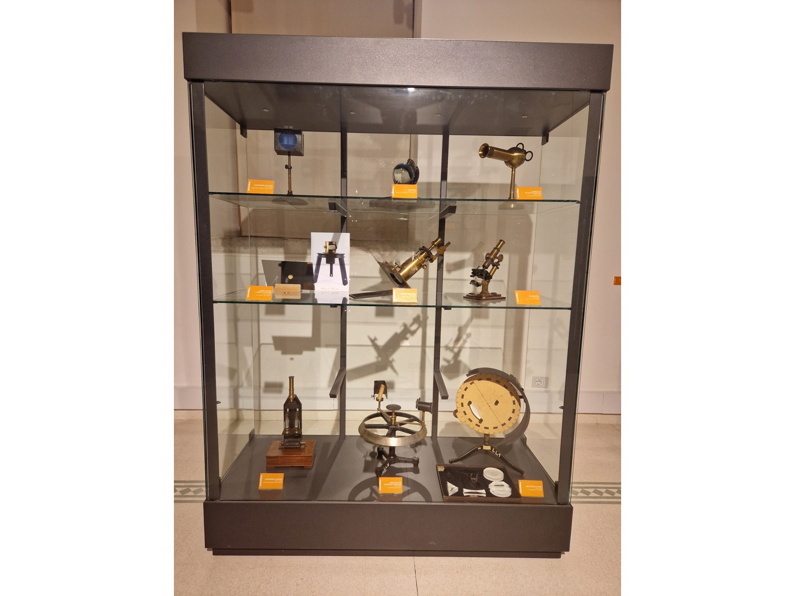
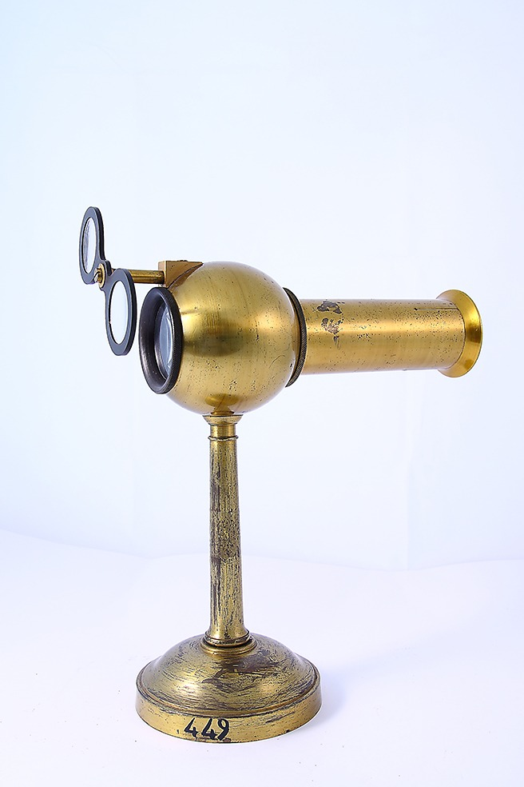
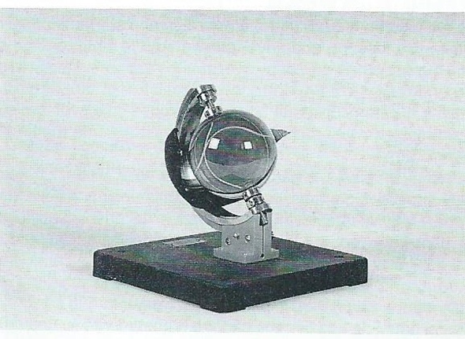
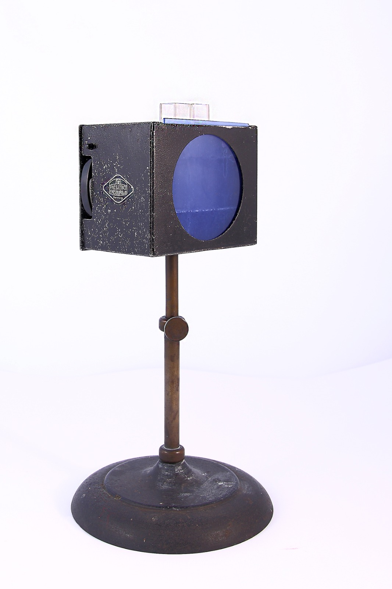
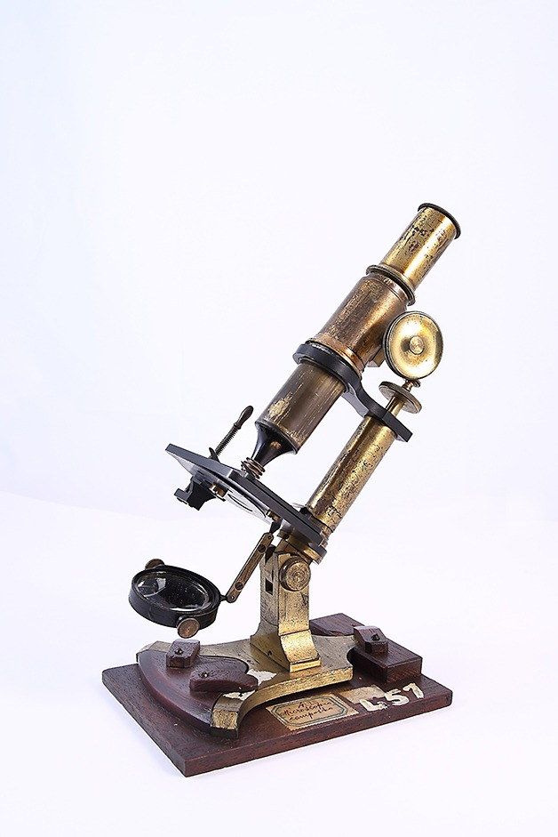
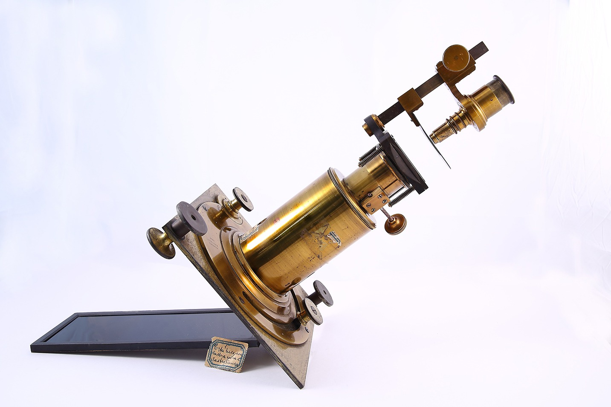
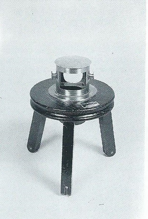
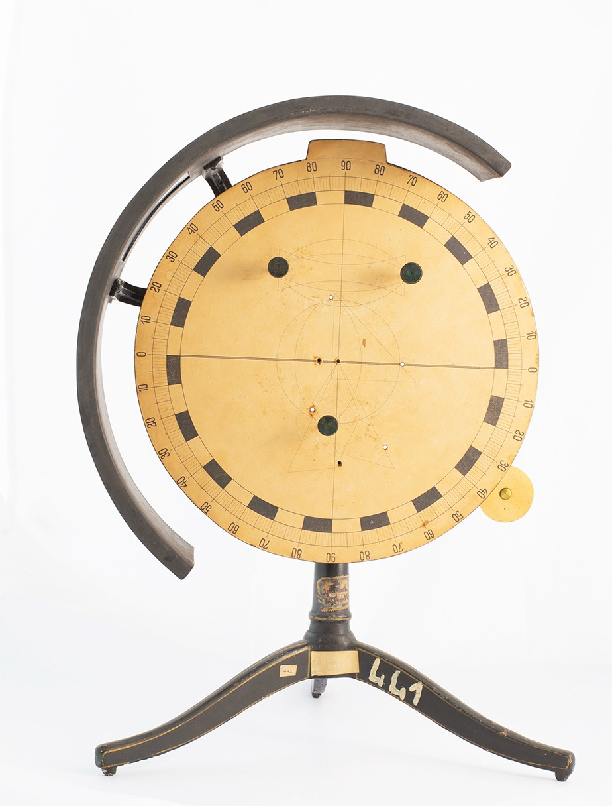
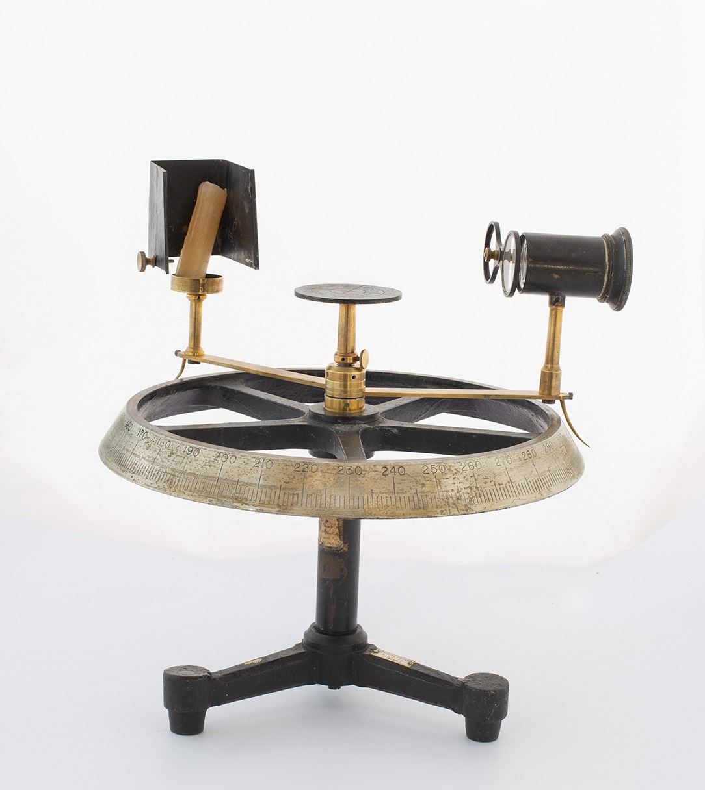
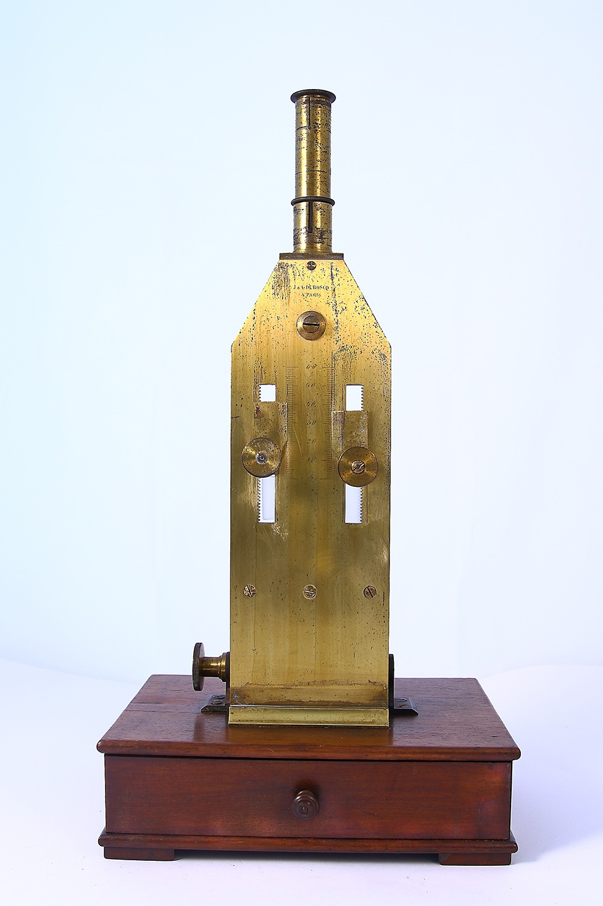

Ottica #5

Strumenti dedicati allo studio della luce, del colore e della visione. Il modello di occhio schematico illustra il funzionamento dell’occhio umano, mentre il microscopio e il microscopio solare permettono osservazioni ad alta precisione. La camera oscura a prisma di Chevalier e il disco ottico di Hartl mostrano fenomeni di proiezione e mescolanza dei colori. Completano l’esposizione i colorimetri di Hellige e Dubosq, per misurare l’intensità dei colori, l’eliofanografo per registrare la durata dell’insolazione e un apparecchio per la riflessione e rifrazione della luce.
Qui puoi trovare:

Modello di occhio schematico

Eliofanografo

Colorimetro di Hellige

Microscopio

Microscopio solare

Camera oscura a prisma di Chevalier

Disco ottico di Hartl

Apparecchio per riflessione e rifrazione
